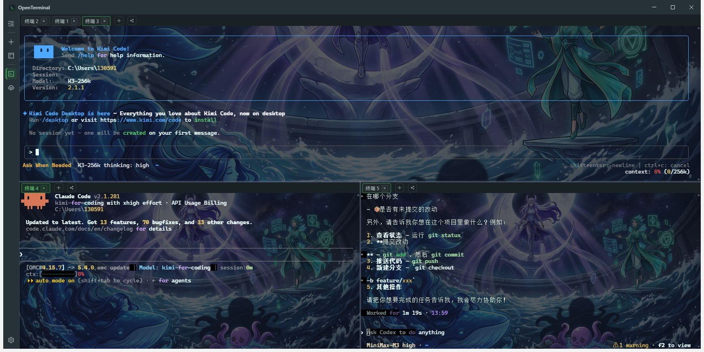
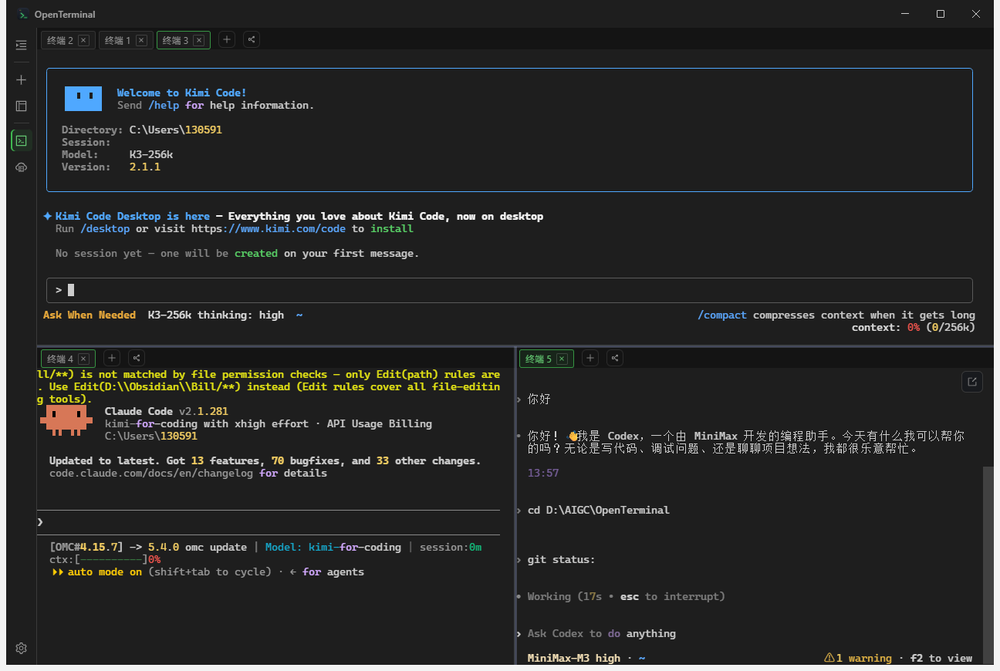
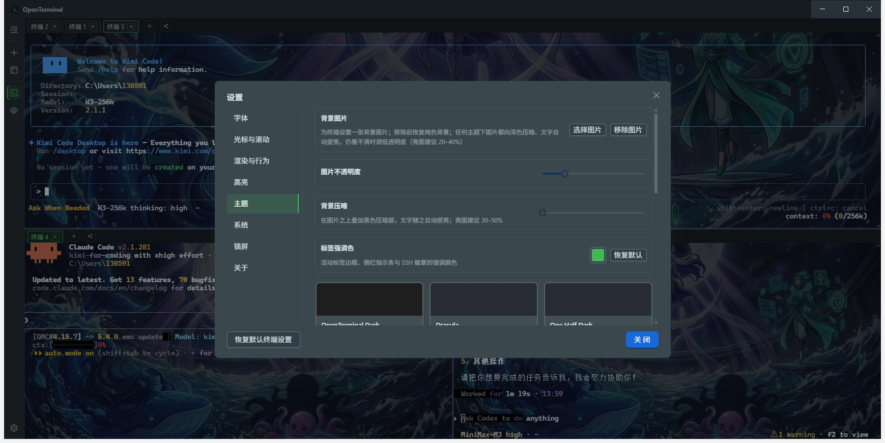
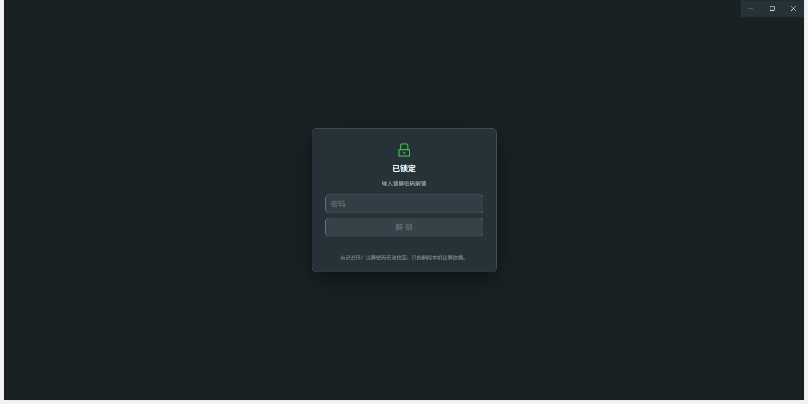

1.0.22 2026-10-08
- 修复中文输入法候选窗不跟随光标（v1.0.21 回归）
- 不再提供 MSI 安装包，统一使用 NSIS exe
- 打包流程新增依赖一致性校验，防止旧依赖混入安装包
开源桌面终端 · MIT 协议
OpenTerminal 面向开发和运维场景：WebGL 加速的终端渲染、可分屏的 SSH 会话、 内置 SFTP 文件管理与广播输入。安装即用，支持自动更新。
当前版本 v1.0.22 · NSIS exe 安装包，支持应用内自动更新。

按使用场景划分的三组功能，全部能力见仓库 README。



从 GitHub Releases 下载；全部历史版本在同一页面。
| 安装包 | 适用场景 | 大小 | 链接 |
|---|---|---|---|
| OpenTerminal-1.0.22-setup.exe | NSIS 安装包，支持应用内自动更新（推荐） | 109 MB | 下载 |
| 历史版本 | 全部发布记录与更新说明 | - | releases 列表 |
应用内检查更新优先访问 GitHub Releases（跟随系统代理），失败时自动回退国内 git.codingplan.site 更新通道（直连）。 更新包经 SHA-512 校验后安装。更新说明文字从发布通道的 release-notes.md 读取，与每次发布同步更新。 自 v1.0.22 起不再提供 MSI 安装包，统一使用 NSIS exe。
完整日志见仓库 CHANGELOG.md。